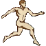
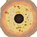
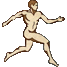
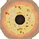

You can drag and drop your Oblivion save file (.ess) into this checklist to see your progress! Saves are typically located in User\Documents\My Games\Oblivion\Saves.
Total Progress: 0%
| Master Skills | |
| Fame | |
| Horses Owned | |
| Greater Powers |
| Master Skills | |
| Fame | |
| Horses Owned | |
| Greater Powers |